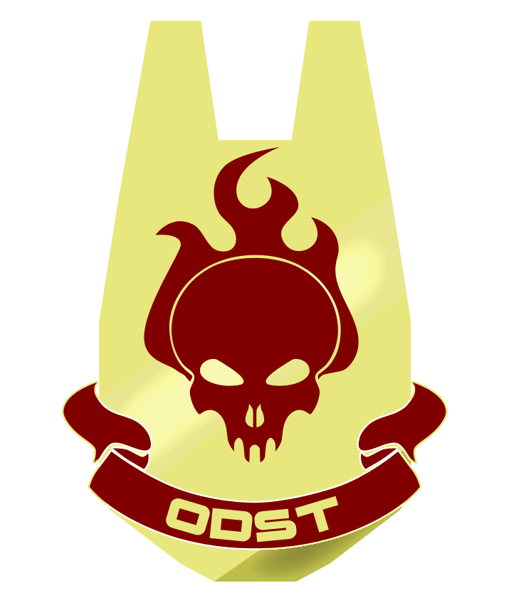
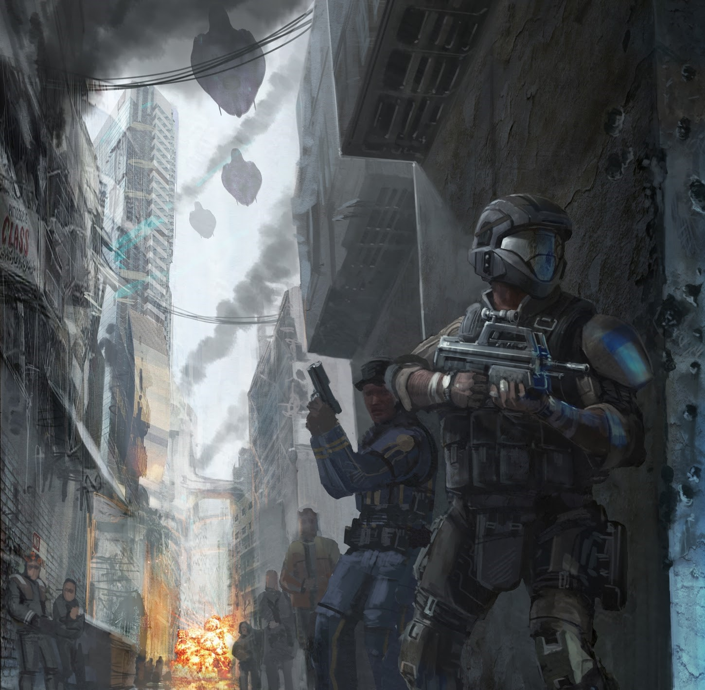
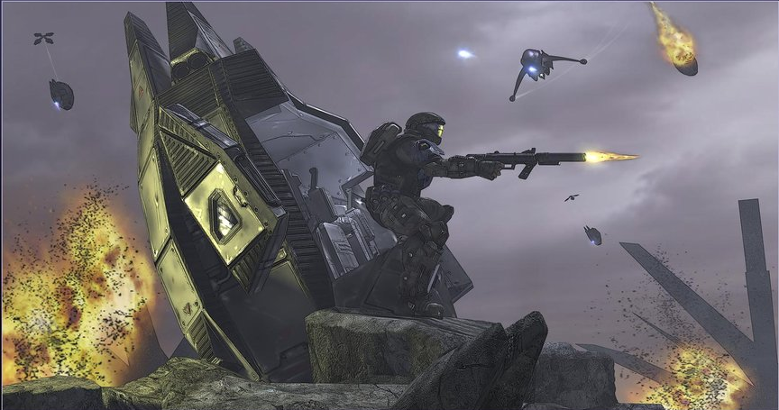
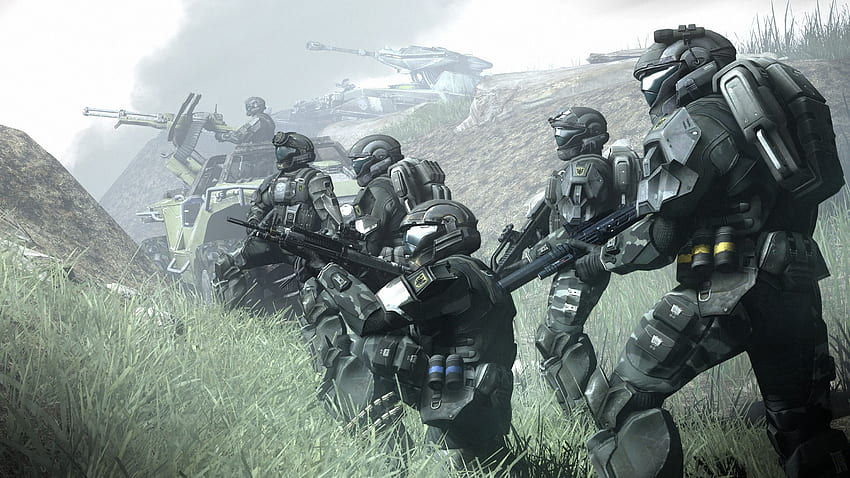
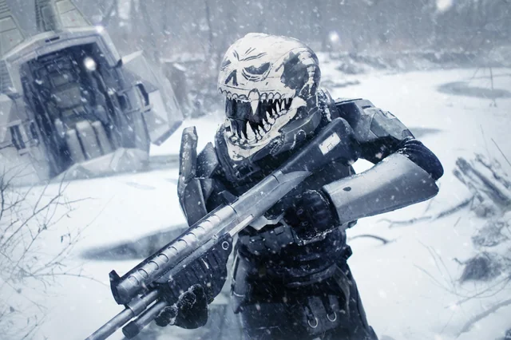
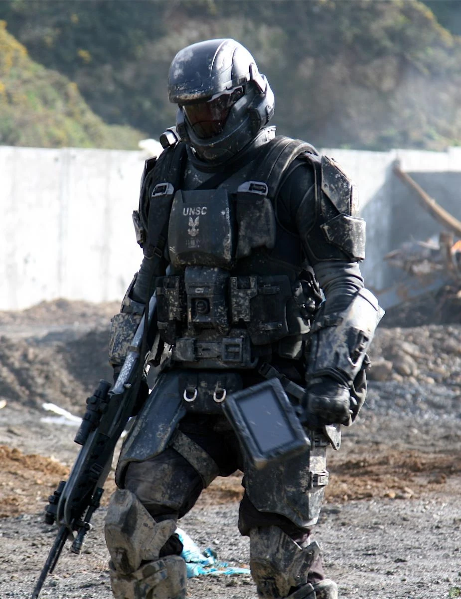
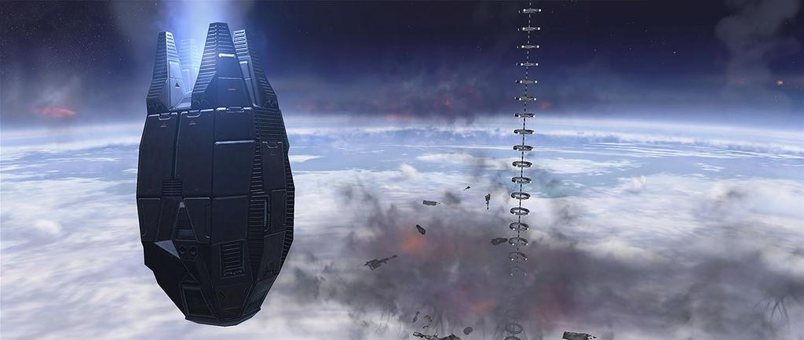
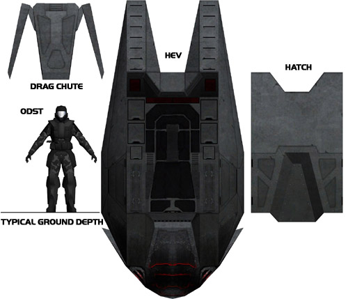
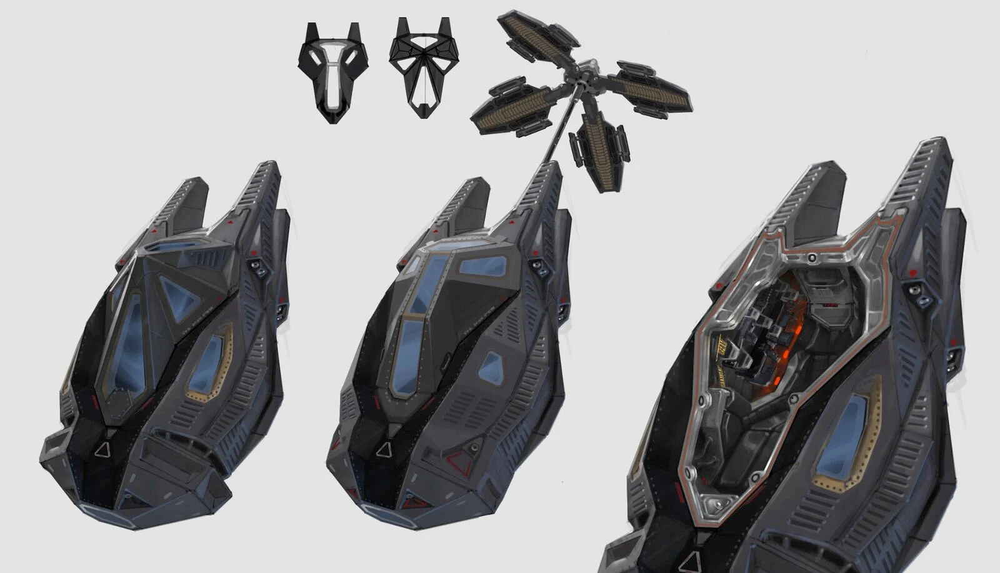
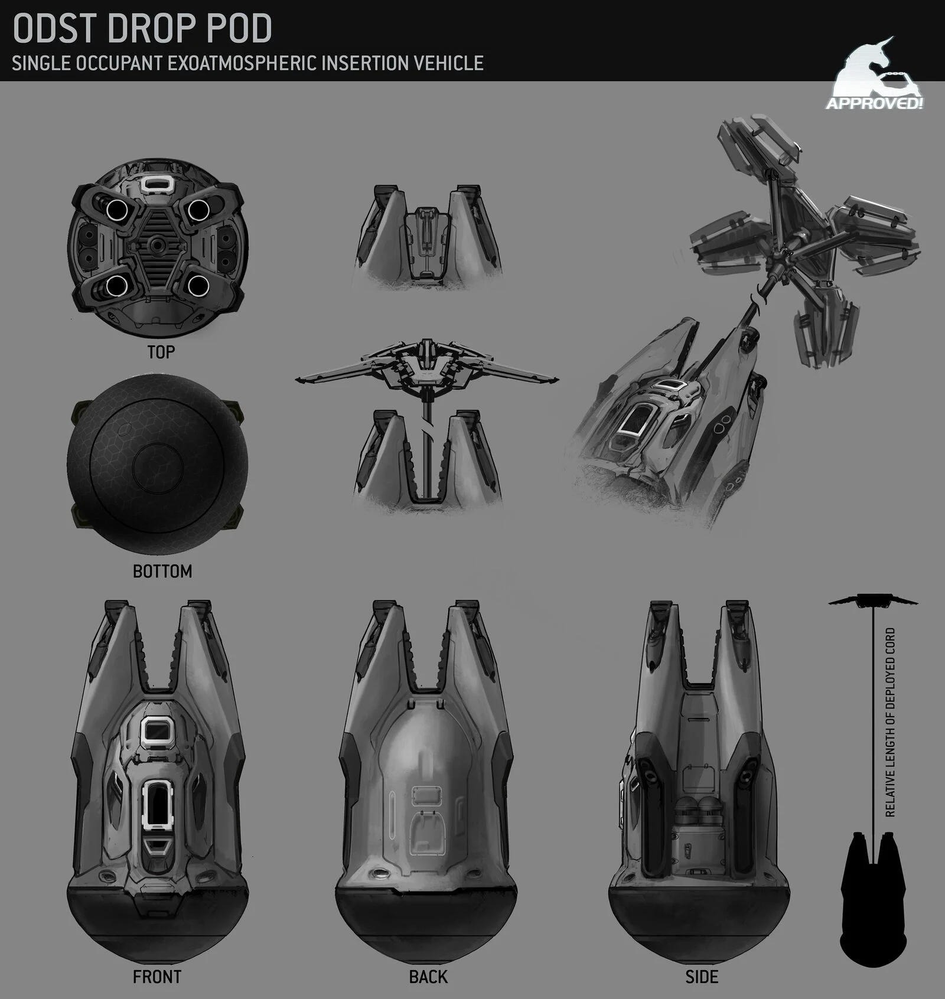

Introduction and History
The concept of deploying highly trained troops behind enemy lines by literally dropping them from orbit originates from 20th and 21st-century paratroopers. Despite mixed success, they proved the effectiveness of such tactics in large-scale warfare.
The United Nations initiated the concept in 2129, originally known as Drop Jet Platoons. The modern Orbital Drop Shock Troopers (ODSTs) emerged in 2163 with the formation of the UNSC Marine Corps. That year marked the first extraterrestrial deployment of UNSC Marines during the Mars Campaign against the Koslovic terrorists. After the Interplanetary War ended in 2170 with the signing of the Callisto Treaty, the ODSTs saw little action as Earth faced postwar challenges like overpopulation and famine.
Insurrection
The ODSTs re-emerged in 2490 during the civil conflict between the Unified Earth Government and Insurrectionists. Using members of the ORION Project as models, they enhanced their reputation and training. Leading up to 2525, they conducted high-risk operations to thwart Insurrectionist activities, aiming to prevent attacks on civilians and disrupt enemy supply lines.
The 10th Shock Troops Battalion was deployed to various locations, including Jericho VII, Arcadia, and Andesia, to combat Insurrectionist forces. During these operations, they faced fierce resistance and suffered many casualties.
Human-Covenant War
With the Covenant attack on Harvest in 2525, the ODSTs shifted their focus to this new alien threat. They prepared for critical engagements and high-risk missions throughout the war. In 2526, ODSTs were deployed to the Corbulo Academy on Circinius IV during a Covenant assault.
They participated in early battles against the Covenant, such as the Battle of Hat Yai and the Battle of Arcadia, assisting in defending key locations and facilitating civilian evacuations. The ODSTs launched assaults to reclaim planets from Covenant occupation, demonstrating their resilience and strategic importance.
Following the enactment of the Cole Protocol in 2535, ODST teams were tasked with securing navigation data to protect Earth's location. They engaged in numerous operations, including the Battle of Jericho VII, missions on Heian, Skopje, Sigma Octanus IV, New Jerusalem, Tribute, and Ariel. The Fall of Reach in 2552 was a significant moment, where many ODSTs lost their lives defending the planet.
Battle for Earth
PO1 Jack Morales leading civilian evacuation of New Mombasa.
After the loss of Reach, the ODSTs fought in the pivotal Battle for Earth in October 2552. They engaged Covenant forces on orbital platforms but faced severe losses as stations like Malta and Athens were destroyed. ODST teams attempted to board the Prophet of Regret's carrier over New Mombasa but were largely unsuccessful due to the carrier's sudden slipspace jump.
The defense of Earth saw ODSTs battling across the globe and in space against overwhelming Covenant forces. In November 2552, they participated in various critical operations. Notably, two ODSTs from the 2nd Shock Troops Battalion aided in locating Spartan John-117 after his crash landing on Earth, a mission that proved essential for coordinating Earth's defenses. One of the two gave his life to ensure the mission's success. Corporal T. Rymann took up a sniper position to buy his fellow ODST Private S. Hartley time to lock onto the Master Chief's signal. In doing so, he was flanked and killed by a Brute Chieftain.
Roles and Operations
GySgt Frank Mitchell emerging from his drop pod under fire after landing on Tribute.
Serving as the rapid reaction force of the UNSC Marine Corps, Orbital Drop Shock Troopers are distinguished by their unconventional deployment method known as "transorbital support interdiction." This involves dropping troopers to a planet's surface aboard small, purpose-built deployment vehicles. This approach allows them to conduct a variety of missions against targets that conventional forces cannot approach undetected. Trained for any kind of landing operation, ODSTs expect to arrive in hellish conditions and engage in incredibly difficult combat zones.
Deployment via Single Occupant Exoatmospheric Insertion Vehicles (SOEIVs) is often considered more effective than traditional dropship methods. It enables spacecraft to make quick passes over a planet and deploy hundreds of ODSTs rapidly. Since they are deployed individually rather than together in one ship, the casualty rate is lower compared to conventional dropship deployments.
Each ODST combat team specializes in particular mission sets but is expected to be adaptable to any situation. ODSTs drop from orbit onto terrestrial environments, often landing behind enemy lines. They are tasked with eliminating enemy units and clearing landing zones for following troops. ODSTs also serve as the primary special forces raiding unit of the Marines, deployed to tip the scales in close battles, raid enemy bases, capture strategically valuable points, and eliminate high-value targets. Similar to their infantry counterparts, ODST units of varying strength are stationed aboard many UNSC vessels and installations.
Specialized Operations Performed by ODSTs:
- Deep Ground Surveillance (DGS) and Long-Range Reconnaissance: Conducting patrols in small groups, usually far behind enemy lines. While they may direct air or artillery strikes against enemy positions, their primary goal is to remain unobserved, focusing on intelligence gathering rather than direct combat.
- Direct Action (DA): Executing short-duration strikes and other small-scale offensive actions in hostile or politically sensitive environments. These operations employ specialized military capabilities to seize, destroy, capture, exploit, recover, or damage designated targets. Direct action missions carry higher physical and political risks and require precise use of force to achieve specific objectives.
- Unconventional Warfare: Engaging in military and paramilitary operations, often of long duration, conducted by indigenous or surrogate forces organized, trained, equipped, supported, and directed by an external source. This includes guerrilla warfare, covert operations, subversion, sabotage, intelligence gathering, and escape and evasion tactics.
- Counter-Terrorism Operations: Responding to terrorist threats and acts, both real and perceived, to neutralize potential dangers.
- Counter-Contraband Operations: Undertaking missions to recapture smuggled or stolen goods, disrupting enemy supply lines and illegal activities.
- Personnel and Special Equipment Recovery/Capture: Recovering and providing medical treatment to friendly personnel in combat environments, as well as capturing high-value individuals and securing critical equipment.
Organization
Under the operational authority of the Naval Special Weapons division of UNSC Special Forces, the Orbital Drop Shock Troopers (ODSTs) are a special operations unit within the UNSC Marine Corps. While not embedded within conventional UNSC forces, ODST units participate in joint operations and act as force multipliers, enhancing the effectiveness, morale, and willingness of those they fight alongside. There are at least four divisions of ODSTs, with the 105th Shock Troops Division being the most notable, as well as the 65th Shock Troops Division. The ODSTs also maintain Special Purpose Forces—a subset with additional training and equipment that enables them to operate in unique and challenging environments. Among these are the Air Assault units, nicknamed "Bullfrogs," who are trained as urban warfare specialists.
The number of ODST combat teams varies from company to company but generally consists of six to eight teams, each specializing in a particular mission set. Every ODST combat team includes between ten and fourteen members, each with a specific skill or function. ODSTs are also organized into fireteams of six to eight personnel. While each team and individual is expected to excel in their specialized skills and assigned missions, they are also expected to be flexible enough to adapt to any situation. Each ODST unit's equipment is tailored for specific missions and tasks, with operators proficient in a wide range of weapons, sensors, and mobility systems optimized for hazardous and difficult environments.
image captured from Security Cam of LT Yuri Petrov after landing on Concord.
Training

Orbital Drop Shock Troopers undergo months of intense training beyond their previous military experience. Initially, candidates focus on physical fitness for three weeks, enduring daily runs, push-ups, and numerous obstacle courses that include simulations with slush, artificial snow, and live-fire exercises. They are trained to crawl for miles through environments filled with barbed wire, rubble, and destroyed buildings while instructors fire rounds just above their heads. Additionally, trainees practice jumping from high positions to prepare for transorbital drops. This rigorous process also serves to identify and remove those unfit to become ODSTs; candidates who cannot meet the standards are returned to their previous units.
Following physical conditioning, the next phase emphasizes squad tactics with a strong focus on teamwork. Candidates don full ODST training gear and are given weapons loaded with tactical training rounds (TTRs). They are then dropped at the base of a mountain and ordered to reach the peak alongside their drill instructor. Instructors may occasionally shoot trainees in the leg with TTRs, causing temporary paralysis, which forces slower candidates to crawl the rest of the way. The exercise is often repeated with added challenges, such as trainers acting as opponents armed with TTR-loaded weapons. Some trainees serve as distractions to help their peers eliminate adversaries.
After mastering squad tactics, candidates receive advanced tactical training in fireteams. They face similar challenges but must now work closely within their teams to reach objectives. Once proficient individually, squad tactics are reintegrated, with multiple fireteams collaborating to achieve their goals, providing mutual support and suppressing opponents.
The ODSTs have a dedicated training unit—the 340th ODST Combat Training Unit—which provides realistic combat environments for special forces personnel. Those with potential for Special Warfare assignments may be reassigned based on their capabilities. For example, Morgan Kinsano, an ODST, was reassigned to the Special Tactics and Equipment Group, leading the Firestorm Battle Group—a specialized unit focused on anti-infantry operations.
Equipment
Battle Dress Uniform
The ODST battle dress uniform is the signature equipment used by the Orbital Drop Shock Troopers. The armor is vacuum-rated and allows for extra-vehicular activity for up to fifteen minutes. The helmet, a derivative of the standard-issue CH252 model, is equipped with modern communications gear, a heads-up display, and motion trackers. It also includes the Visual Intelligence System, Reconnaissance (VISR), a proprietary integrated data management system that provides navigational data, access to certain infrastructure systems, and storage for mission content.
Manufactured by Misriah Armory, the ODST armor incorporates titanium composites in its plating to offer enhanced protection. The suit features a heating and cooling system capable of matching the infrared signature of the local weather conditions. There are several editions and variants of the armor, each designed with mission-specific functions.
Drop Pod
Drop pods are a crucial deployment method used by the two primary human military organizations in the galaxy: the United Nations Space Command (UNSC) and the Colonial Military Authority (CMA). The UNSC, in particular, heavily relies on drop pods due to the specialized units known as Orbital Drop Shock Troopers (ODSTs). These elite soldiers are experts in using drop pods to infiltrate enemy lines and execute special operations. While ODSTs are the primary users, Spartans and regular Marine forces also utilize drop pods for insertion missions. The deployment and operational protocols of drop pods are governed by UNSC Insertion Protocols.
Orbital drop pods were first developed by humanity in the early 22nd century as a solution for "transorbital support interdiction." The inaugural deployment of ODSTs occurred during the Interplanetary War of the 2160s, where they were used against Koslovic forces on Mars. Since then, drop pods have been a staple in UNSC military tactics, seeing extensive use during the Insurrection and the Human-Covenant War.
Advantages of Drop Pod Deployment
Deploying troops via drop pods results in a lower overall attrition rate compared to standard dropship insertions. This is because each soldier is deployed individually, reducing the risk of multiple casualties that can occur if a larger craft like a Pelican dropship is destroyed. Even if some drop pods are lost to anti-aircraft fire, the total casualties are fewer than losing a dropship with numerous personnel on board.
Deployment Procedure
A standard ODST drop involves dozens or hundreds of individual pods launched from an orbiting starship performing evasive maneuvers. An artificial intelligence system controls the descent of each pod through the atmosphere to predetermined landing zones along routes designed to maximize evasion of enemy fire. Upon the commanding officer's signal, a thirty-second countdown begins before the pods are ejected. Depending on the vessel type—such as Halcyon-class and Marathon-class cruisers—the pods may be released via free drop or launched using magazine-fed coilgun launchers mounted on the ship. During descent, the pods spend most of the time in free fall, typically only a few minutes, before their braking systems activate to guide them into their landing sites. The pods have limited maneuvering capabilities for adjusting their landing zones and avoiding anti-air defenses. In some cases, ODSTs may deploy during meteor showers to disguise their entry among natural atmospheric debris. As the pods approach the ground, they deploy a drag chute—formally known as a "Drogue Panel"—from the upper panels to slow their descent. At approximately one kilometer above the surface, computer-controlled retrothrusters engage to rapidly decelerate the pod for a safe landing. Upon impact, detonation charges blow off the entrance hatch, allowing the occupant to exit immediately and engage in combat. If the pod lands in an unsuitable location, it retains enough rocket fuel for the occupant to reactivate the thrusters and "hop" to a better position. Pod Design and Features Inside, the drop pod contains a single crash seat facing the exterior hatch, which is equipped with hardened and shielded communications gear. This equipment provides the occupant with vital information during the drop and links the ODST team members. While inside the pod, the soldier's helmet communications are redundant unless the pod's systems fail. The crash harness offers minimal inertial dampening and comfort, though newer models have seen improvements. The exterior shell is made of Titanium-A armor; damage to this shell during atmospheric entry can result in the destruction of the pod.
Variants of Drop Pods
The design and manufacturing of drop pods are categorized mainly into Single Occupant Exoatmospheric Insertion Vehicles/Vessels (SOEIVs) and Human Entry Vehicles (HEVs).
- M7650 Human Entry Vehicle:Introduced in 2461, this older model was used by both the UNSC and CMA. It saw extensive use during the Insurrection and the Human-Covenant War, especially on ships without dedicated ODST units. A more hevaly armored model that was still in service near the start of the Human-Covenant War. it is still prefered my some ODSTs. his variant features a box-like design with a door and airframe coated in Titanium-A armor. The door can serve as cover once expelled. The occupant sits in a crash harness with minimal comfort and basic course correction controls, though the pod's computer manages the descent. Upon atmospheric entry, the M8823 extends drogue panels and releases decoys to distract enemy fire while decelerating. Braking rockets engage at one kilometer above the surface. Side panels serve as storage bays for food, weapons, ammunition, and other supplies.
- M8900 Single Occupant Exoatmospheric Independent Entry Vehicle: A high-speed drop pod favored by ODST units during the later years of the Human-Covenant War. Preferred in the later years of the Human-Covenant War, the M8900 has an angular design with an armored prow and small armored windows. It is faster and more maneuverable than the M8823, making it ideal for drops into heavily defended areas. It features an air brake on top and reinforced impact plating on the bottom.
- M9407 Single Occupant Exoatmospheric Independent Entry Vehicle: A modern, post-war drop pod equipped with advanced technologies, used by both ODSTs and Spartans. It a post-war design resulting from collaborations between the UNSC and military contractors. It includes improvements such as more reliable communications, limited inertial compensation, compatibility with gravitic-assist launch tubes, and enhanced structural integrity. The internal harness is configurable, compatible with the latest ODST and MJOLNIR armor systems. It also boasts more powerful maneuvering thrusters, a new air brake design, and advanced materials like metal matrix composites and thermal superconducting elements in the heat shield